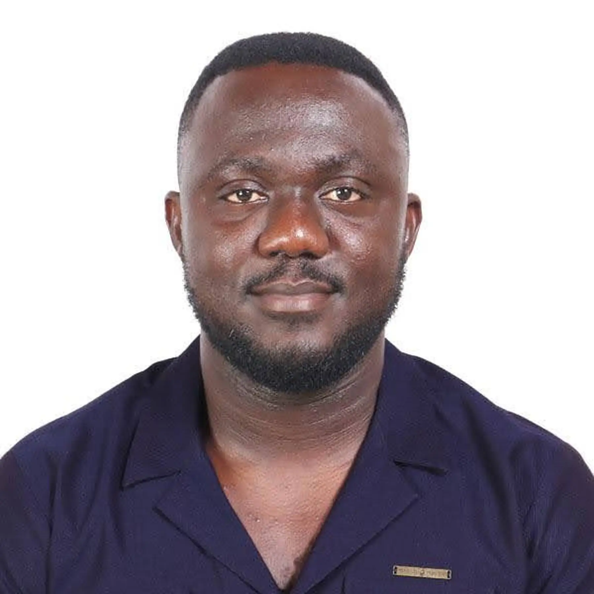

Emmanuel Lambert | WDD 130
My name is Emmanuel Lambert. I am a Ghanaian. I am currently studying web development at BYU Idaho. I am dark in complexion have a blue eyes and love food alot.
My name is Emmanuel Lambert. I am a Ghanaian. I am currently studying web development at BYU Idaho. I am dark in complexion have a blue eyes and love food alot.